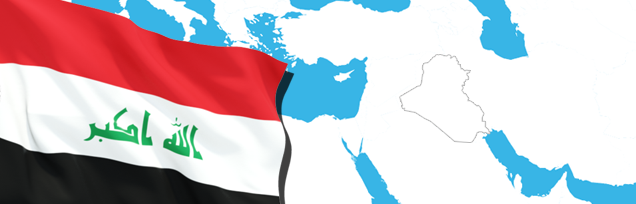
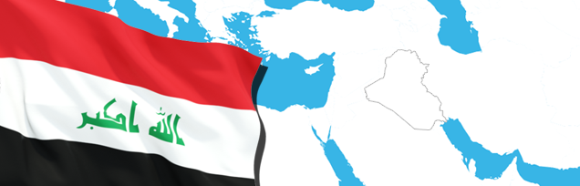

تزامنا مع دخول شهر رمضان وقرب حلول عيد الفطر المبارك .. وزعت وزارة الهجرة و المهجرين ( 65٫494 ) حصة اغاثية بين الأسر النازحة والعائدة في العاصمة بغداد و ديالى و الانبار و صلاح الدين و المحافظات الجنوبية ، تضمن التوزيع سلات غذائية و صحية و كسوة ملابس و مفروشات ارضية و بطانيات و وسادات ومستلزمات منزلية .
.............